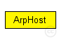
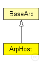

This documentation is released under the Creative Commons license
This documentation is released under the Creative Commons licenseUses host index as network and MAC address.
It assumes that hosts are declared as an array of NED modules, and returns for both the level 2 and level 3 addresses, the index of the current host in this array.
The following diagram shows usage relationships between types. Unresolved types are missing from the diagram. Click here to see the full picture.
The following diagram shows inheritance relationships for this type. Unresolved types are missing from the diagram. Click here to see the full picture.
| Name | Type | Description |
|---|---|---|
| BaseArp | simple module |
Module which is responsible for Addressresolution |
| Name | Type | Default value | Description |
|---|---|---|---|
| notAffectedByHostState | bool | true | |
| coreDebug | bool | false |
debug switch for the core framework |
| debug | bool | false |
enable debugging for this module |
| offset | int | 0 |
Adds an offset to node addresses |
| Name | Value | Description |
|---|---|---|
| class | ArpHost |
// Uses host index as network and MAC address. // // It assumes that hosts are declared as an array of NED modules, // and returns for both the level 2 and level 3 addresses, the // index of the current host in this array. simple ArpHost extends BaseArp { parameters: @class(ArpHost); bool debug = default(false); // enable debugging for this module int offset = default(0); // Adds an offset to node addresses }
This documentation is released under the Creative Commons license